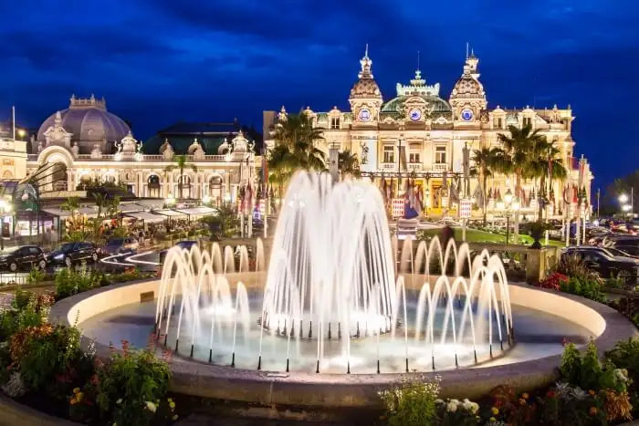
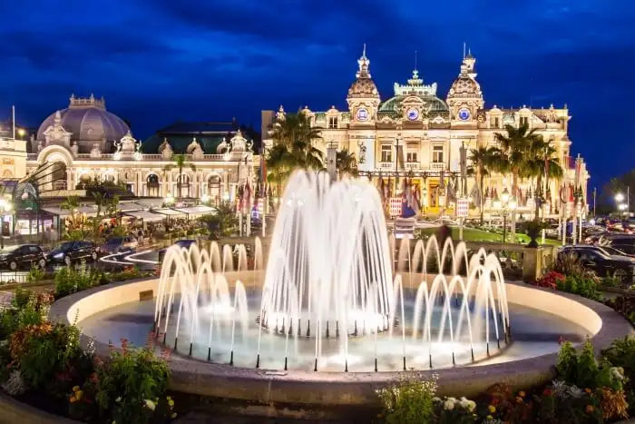
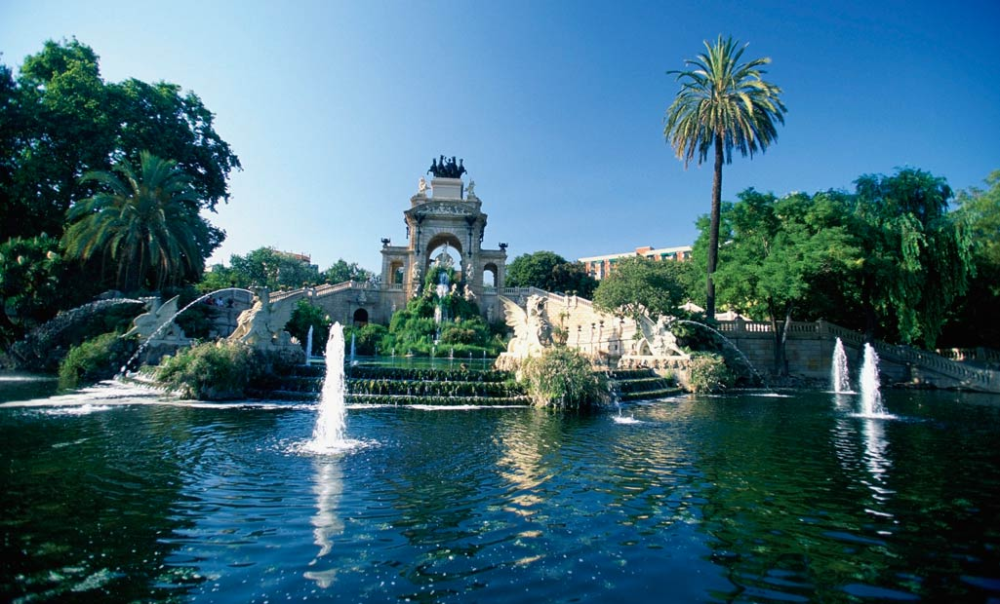

AUSTRALIA

The land Down Under has so much diversity that you can find everything from beaches to mountains, theme parks to ski resorts and vineyards to wildlife. Visit the iconic Opera House in Sydney, go snorkelling at the Great Barrier Reef and check out Kangaroo Island’s rugged beauty. You will truly be spoilt for choice in Australia!
SPAIN

Sunny Spain is a great location for a mid-season holiday in Europe. The cities of Barcelona and Madrid are of course must-dos. Don’t miss visiting the Alhambra fortress in Granda, Andalusia. Take a Flamenco class or learn to cook authentic Spanish cuisine. If possible, coincide your visit with one of Spain’s many festivals – La Tomatina, Tenerife Carnival or the famous Encierro or running of the bulls.
GREECE

Despite its fiscal troubles, Greece is still one of the top 10 countries to visit. Historical Athens and Delphi with their legendary ruins are a must-visit, as are the gorgeous islands of Santorini and Corfu. Or get away from the crowds by visiting some lesser-known islands, such as Cythera and Kastelorizo. And indulge in the sumptuous Mediterranean cuisine as you contemplate the perfect sunset over the Aegean.
SOUTH AFRICA
Offering a wide array of options, South Africa is another destination that should be on your bucket list. Cape Town has consistently made it to the list of best cities to visit. Kruger National Park rivals Kenya’s Masai Mara in its wildlife safaris. Don’t miss out on visiting the Table Mountain or the Kalahari dessert. And South Africa’s wine industry is good enough to give France and Italy a run for their money!
AUSTRIA

Forget Switzerland and visit its less touristy (and more beautiful) neighbour – Austria. Vienna’s medieval architecture, cobbled streets and quaint cafes make it a charming city. Visit Salzburg, the birthplace of Mozart and take a bicycle tour of the city where the classic movie Sound of Music was filmed. While you’re in Salzburg, make a day trip to the Krimml Falls (the highest in Europe) or to Hallstatt, the oldest still-inhabited village.
TURKEY

Straddling Europe and Asia, Turkey has been on the list of top 10 countries in the world for years. So if you have yet to visit this East-meets-West gem, let this be the year that you do! Istanbul itself has plenty of things to keep you occupied – the Blue Mosque, Hagia Sophia, Grand Bazaar and a cruise down the Bosphorus. Make sure you visit the quirky cave dwellings of Cappadocia and try hot air ballooning over its surreal landscape.
INDONESIA

Another country with numerous islands to explore is Indonesia. If you have time to explore only one island, let it be Bali. Explore Ubud, the cultural centre of Bali or go for a sunrise trek to Mount Agung (the highest point on the island) or Mount Batur, which is an active volcano set in a huge crater. You could also head to the beaches and go dolphin watching at Lovina.
VIETNAM
On your next trip to South East Asia skip the touristy Thailand and head to Vietnam instead. From the Marble Mountains in Danang to the azure waters of Nha Trag, from the backwaters of the Mekong Delta to the hustle bustle of Hanoi, the country has something for everyone. Don’t miss going to Ho Chi Minh City for its colonial architecture, exquisite cuisine and café culture.
PHILLIPINES

An archipelago of some 7,000 islands, the Philippines is a fun destination. You will find perfect beaches, amazing vistas and warm hospitality. Go island hopping and discover hidden beaches, snorkel amongst colourful corals and try some adventure sports. Or head to the rice terraces of Banaue and immerse yourself in the slow, pastoral life.
JORDAN

If you’re looking for a slightly off-the-beaten path vacation this year, consider Jordan. One of the safest countries in the Middle East, Jordan is home to the incredible lost city of Petra. Head to the lowest point on earth and float in the Dead Sea and then experience the stark landscape of the Wadi Rum desert – go skydiving over the desert canyons or stay in a Bedouin camp.